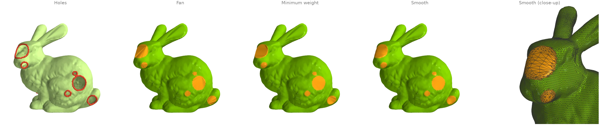
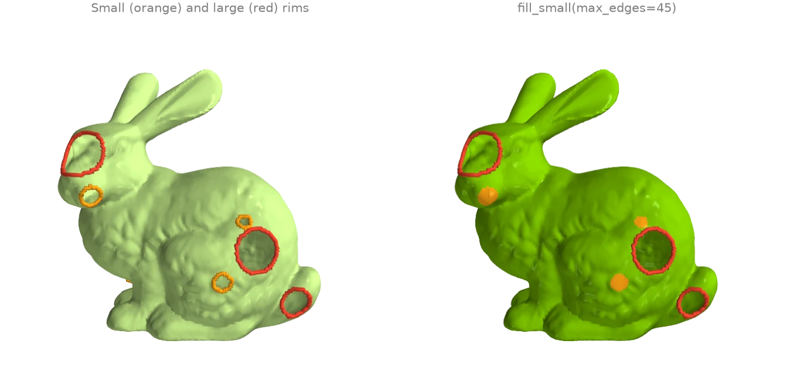
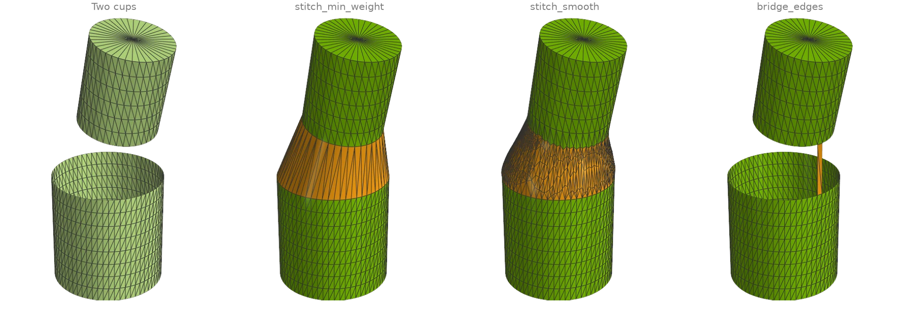
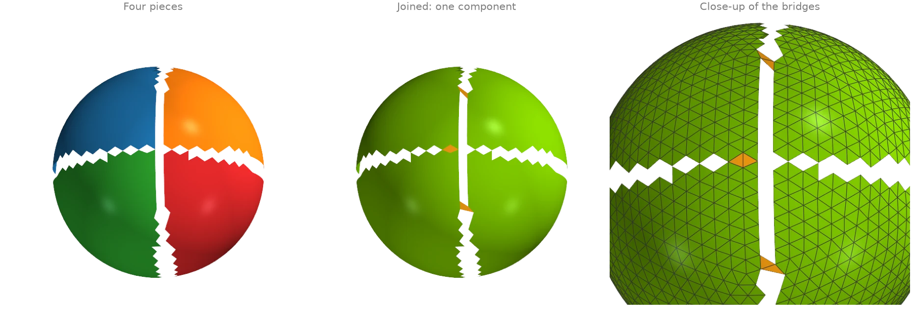
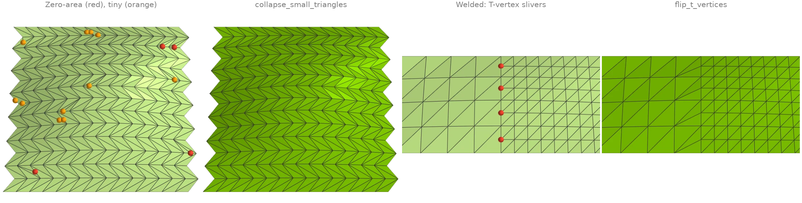
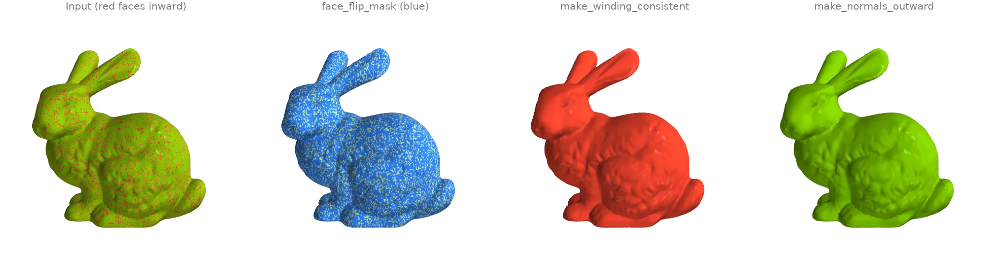
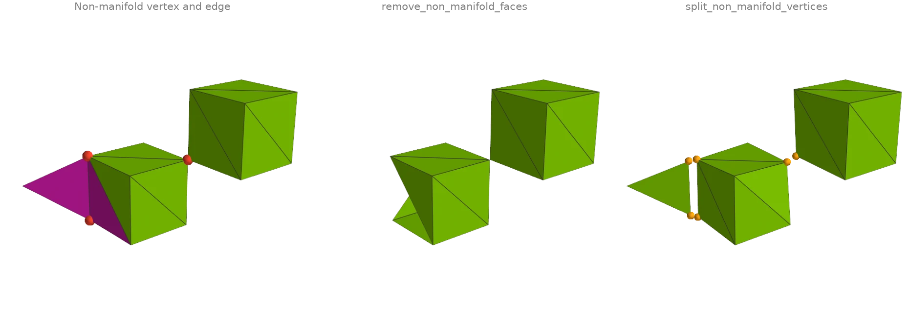
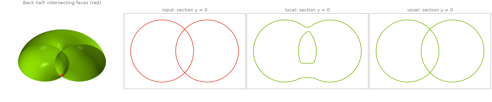
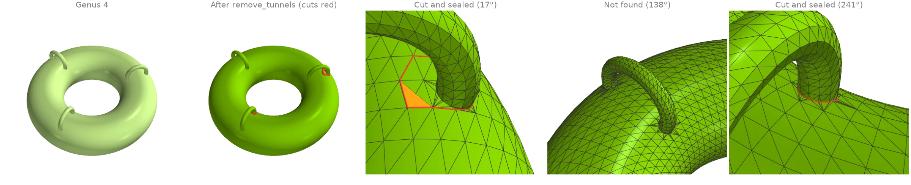
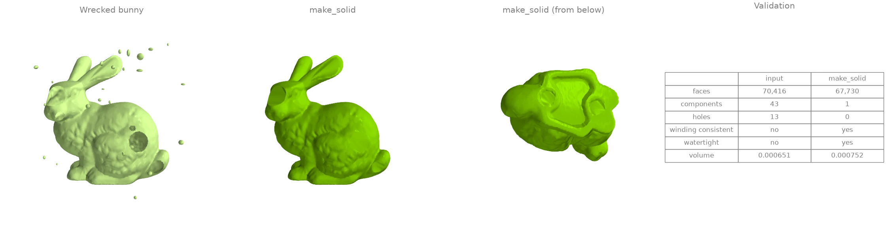

Repairing meshes
Holes, stitching, orientation, degeneracies, non-manifold elements, self-intersections and tunnels.
Filling holes: fan, minimum weight and smooth
The bunny has holes punched through its side and the scan's own openings in its base.
boundary_loops finds every rim, and three fills close them:
fill_fanfans each hole from one rim vertex;fill_min_weightpicks the minimum-weight triangulation of each rim;fill_smoothrefines that patch and fairs it into the surrounding surface.
import ordito as od
from examples import data
vertices, faces = data.load("holey_bunny", device)
loops = od.boundary.boundary_loops(vertices, faces)
print(f"{len(loops)} holes, rims of {sorted(loop.shape[0] for loop in loops)} vertices")
fan_faces = od.holes.fill_fan(vertices, faces)
min_weight_faces = od.holes.fill_min_weight(vertices, faces)
smooth_vertices, smooth_faces, patch = od.holes.fill_smooth(vertices, faces, return_patch=True)
print(
"watertight after the smooth fill:",
od.validation.is_watertight(smooth_vertices, smooth_faces),
)
11 holes, rims of [22, 23, 36, 37, 39, 40, 42, 52, 75, 80, 96] vertices
watertight after the smooth fill: True

Modelled on: MeshLib: fill holes · PyVista: fill_holes · pymeshfix: bunny · PyMeshLab: close holes
Filling only the small holes
A scan's large openings are often intended while its small holes are dropouts.
fill_small closes only the rims up to a size (here 45 boundary
edges) with minimum-weight patches and leaves the rest open.
fillable_loop_mask answers a different question: which
rims a fill over the rim's own vertices can close without creating an invalid mesh. The holes
punched into the bunny have ragged rims with chords (an existing edge between two rim
vertices), which a fill could duplicate, so they are flagged; the scan's own holes in the
base are not.
import ordito as od
from examples import data
vertices, faces = data.load("holey_bunny", device)
loops = od.boundary.boundary_loops(vertices, faces)
fillable = od.holes.fillable_loop_mask(vertices, faces, loops).numpy()
print("rim sizes:", [loop.shape[0] for loop in loops])
print("chord-free and simple:", fillable.tolist())
filled = od.holes.fill_small(vertices, faces, max_edges=45)
left = od.boundary.boundary_loops(vertices, filled)
print(f"after fill_small: {len(left)} holes left, of {[loop.shape[0] for loop in left]} edges")
rim sizes: [96, 75, 37, 52, 22, 36, 23, 42, 39, 40, 80]
chord-free and simple: [False, False, False, False, False, False, False, True, True, True, True]
after fill_small: 4 holes left, of [96, 75, 52, 80] edges

Modelled on: pymeshfix · PyMeshLab: close holes
Stitching two boundaries
Two open cups face each other across a gap, with rims of different radius, resolution and
tilt. stitch_min_weight joins the rims with the band of
triangles that minimizes a stitching metric;
stitch_smooth then refines that band and fairs it into both
surfaces. bridge_edges is the local operation underneath: it
tacks one boundary edge of each rim together with two triangles, turning the two rims into
one.
import numpy as np
import ordito as od
from examples import data
vertices_a, faces_a = data.load("cup_bottom", device)
vertices_b, faces_b = data.load("cup_top", device)
band_vertices, band_faces = od.holes.stitch_min_weight(vertices_a, faces_a, vertices_b, faces_b)
smooth_vertices, smooth_faces, band = od.holes.stitch_smooth(
vertices_a, faces_a, vertices_b, faces_b, return_patch=True
)
print("stitched watertight:", od.validation.is_watertight(smooth_vertices, smooth_faces))
# Bridge the closest pair of boundary edges, one on each rim.
vertices, faces = od.combine.concatenate([(vertices_a, faces_a), (vertices_b, faces_b)])
rim = od.boundary.oriented_boundary_edges(vertices, faces).numpy()
on_a = rim[:, 0] < vertices_a.shape[0]
mid = vertices.numpy()[rim].mean(axis=1)
gap = np.linalg.norm(mid[on_a][:, None] - mid[~on_a][None], axis=2)
i, j = np.unravel_index(gap.argmin(), gap.shape)
bridged = od.holes.bridge_edges(vertices, faces, tuple(rim[on_a][i]), tuple(rim[~on_a][j]))
print("rims after the bridge:", len(od.boundary.boundary_loops(vertices, bridged)))
stitched watertight: True
rims after the bridge: 1

Modelled on: MeshLib: stitch holes
Joining nearby open components
A surface torn into four pieces by two narrow cracks is four components.
join_closest_components repeatedly bridges the
closest pair of boundary edges on two different open components with a two-triangle patch
(see bridge_edges) until one component is left. Nothing moves
and no vertex is added; max_distance would refuse joins across a wider gap.
face_connected_component_labels counts
the components before and after.
import numpy as np
import ordito as od
from examples import data
vertices, faces = data.load("torn_hemisphere", device)
joined = od.holes.join_closest_components(vertices, faces)
before = od.adjacency.face_connected_component_labels(faces).numpy()
after = od.adjacency.face_connected_component_labels(joined).numpy()
print(f"components: {np.unique(before).size} -> {np.unique(after).size}")
print(f"bridge triangles: {(joined.shape[0] - faces.shape[0]) // 3}")
components: 4 -> 1
bridge triangles: 6

Modelled on: MeshLib examples
Degenerate triangles, duplicate vertices and T-vertices
Two small patches carry the defects that break normals, cotangent weights and curvature.
- The first has needles, caps and exactly degenerate triangles (marked).
face_nondegenerate_maskfinds the zero-area ones andremove_degenerate_faceswould drop them;collapse_small_trianglesinstead collapses the shortest edge of every triangle below an area threshold, which removes the needles and caps as well without opening a hole. - The second is two grids stitched at different resolutions and never welded.
remove_duplicated_verticeswelds the seam; the fine side's extra seam vertices are then T-vertices, each with a sliver triangle (marked) across the coarse edge, andflip_t_verticesflips those slivers away.
import ordito as od
from examples import data
vertices, faces = data.load("sliver_patch", device)
zero_area = ~od.triangles.face_nondegenerate_mask(vertices, faces).numpy()
_, dropped = od.repair.remove_degenerate_faces(vertices, faces)
collapsed_vertices, collapsed = od.repair.collapse_small_triangles(vertices, faces)
print(f"zero-area faces: {zero_area.sum()}; faces after dropping them: {dropped.shape[0] // 3}")
print(f"faces after collapsing small ones: {faces.shape[0] // 3} -> {collapsed.shape[0] // 3}")
patch_vertices, patch_faces = data.load("t_vertex_patch", device)
welded_vertices, _, _, welded = od.repair.remove_duplicated_vertices(
patch_vertices, patch_faces, epsilon=1e-6
)
flipped = od.repair.flip_t_vertices(welded_vertices, welded)
for name, f in (("welded", welded), ("flipped", flipped)):
quality = od.triangles.face_quality(welded_vertices, f).numpy()
print(f"{name}: {(quality > 40).sum()} slivers, worst aspect ratio {quality.max():.0f}")
print(f"seam vertices welded: {patch_vertices.shape[0] - welded_vertices.shape[0]}")
zero-area faces: 4; faces after dropping them: 412
faces after collapsing small ones: 416 -> 392
welded: 4 slivers, worst aspect ratio 1591
flipped: 0 slivers, worst aspect ratio 2
seam vertices welded: 5

Modelled on: MeshLib: fix degeneracies · PyMeshLab: cleaning
Consistent and outward orientation
A fifth of the bunny's triangles have their winding reversed (red: facing inward).
face_flip_mask propagates an orientation across shared
edges and flags every face that disagrees with its component's first face;
make_winding_consistent applies those flips. That
makes the winding coherent but not necessarily outward: here the seed face happened to face
inward, so everything did. make_normals_outward also
fixes the global sign from the enclosed volume. The scan is open at its base, so it is
called with multibody=True: the default only flips a watertight mesh (trimesh's rule).
import ordito as od
from examples import data
vertices, faces = data.load("flipped_bunny", device)
print("winding consistent:", od.validation.is_winding_consistent(faces))
flips = od.validation.face_flip_mask(faces).numpy()
print(f"faces to flip: {flips.sum()} of {flips.size}")
consistent = od.repair.make_winding_consistent(faces)
# The scan has holes in its base: the whole-mesh rule only flips a watertight mesh, the
# per-body rule trusts each component's own signed volume.
outward = od.repair.make_normals_outward(vertices, faces, multibody=True)
for name, f in (("consistent", consistent), ("outward", outward)):
print(f"{name}: signed volume {od.measures.volume(vertices, f):+.6f}")
winding consistent: False
faces to flip: 55574 of 69451
consistent: signed volume -0.000770
outward: signed volume +0.000770

Modelled on: libigl 706 · PyMeshLab · MeshLib examples
Non-manifold repair
Two cubes meet at a single corner (a non-manifold vertex: two fans of faces touch only
there), and a fin is glued to one cube's edge (a non-manifold edge with three faces).
vertex_manifold_mask and
edge_manifold_mask find them. Two repairs with
different trade-offs:
remove_non_manifold_faces deletes every face
on a non-manifold edge, while
split_non_manifold_vertices keeps every face
and duplicates vertices instead, so the cubes come apart at the corner and the fin is cut
loose along its edge (pulled apart slightly in the image). Deleting faces cannot fix the
shared corner, so only the split result is manifold.
import ordito as od
from examples import data
vertices, faces = data.load("broken_box", device)
bad_vertices = ~od.validation.vertex_manifold_mask(vertices, faces).numpy()
bad_faces = ~od.validation.edge_manifold_mask(faces).numpy()
print(f"non-manifold vertices: {bad_vertices.sum()}")
print(f"faces on a non-manifold edge: {bad_faces.sum()}")
removed_vertices, removed_faces = od.repair.remove_non_manifold_faces(vertices, faces)
split_vertices, split_faces, source = od.repair.split_non_manifold_vertices(vertices, faces)
for name, (v, f) in {
"removed": (removed_vertices, removed_faces),
"split": (split_vertices, split_faces),
}.items():
manifold = od.validation.is_vertex_manifold(f) and od.validation.is_edge_manifold(f)
print(f"{name}: {f.shape[0] // 3} faces, {v.shape[0]} vertices, manifold: {manifold}")
non-manifold vertices: 3
faces on a non-manifold edge: 3
removed: 22 faces, 15 vertices, manifold: False
split: 25 faces, 19 vertices, manifold: True

Modelled on: PyMeshLab · Open3D: mesh properties
Fixing self-intersections
A spindle torus, whose tube radius exceeds its ring radius, passes through itself around its
axis. face_self_intersecting_mask finds
the triangles that cross a non-adjacent one (red).
fix_self_intersections removes them in one of two
ways: "local" cuts out the intersecting faces plus a ring around them and refills the
holes, keeping the rest of the mesh as it was; "voxel" rebuilds the whole surface as the
zero level set of its signed distance field. The cross-sections through the axis show what
changed: the lens-shaped core where the tube overlaps itself has winding number 0, so it is
a cavity, and both repairs keep it as one, bounded by a surface that no longer crosses the
outer shell (the local repair leaves it as a separate inner shell, the voxel rebuild lets
the two touch). The 3-D view is cut in half to show the core.
import ordito as od
from examples import data
vertices, faces = data.load("self_intersecting_torus", device)
crossing = od.validation.face_self_intersecting_mask(vertices, faces).numpy()
print(f"self-intersecting faces: {crossing.sum()} of {crossing.size}")
results = {}
for method in ("local", "voxel"):
results[method] = od.repair.fix_self_intersections(vertices, faces, method=method)
v, f = results[method]
left = od.validation.face_self_intersecting_mask(v, f).numpy().sum()
print(f"{method}: {f.shape[0] // 3} faces, {left} still intersecting")
self-intersecting faces: 325 of 9216
local: 10122 faces, 0 still intersecting
voxel: 54484 faces, 0 still intersecting

Modelled on: MeshLib: self-intersections · pymeshfix
Removing tunnels
A ring torus carries three thin handles fused onto its tube, the kind of spurious topology a
scan picks up where two sheets touch: genus 4, of which only the ring's own tunnel is meant.
remove_tunnels computes a homology basis, shortens each
loop within its class, and cuts the surface along every loop no longer than max_length,
sealing both rims of each cut (red); nothing moves, so the cut is only visible as new
topology. The threshold sits far below the ring's own loops, so the
intended tunnel survives. One call removes at most one tunnel per family of dependent loops,
hence the loop until nothing is cut.
euler_characteristic tracks the genus.
The test is on shortened loop length, and shortening is a local descent: here the basis loops through one of the handles stay several times longer than its girth, so that handle is not found at this threshold.
import ordito as od
from examples import data
vertices, faces = data.load("thin_handles", device)
print("genus before:", (2 - od.measures.euler_characteristic(faces)) // 2)
n_input = faces.shape[0] // 3
removed = 1
while removed:
vertices, faces, removed = od.repair.remove_tunnels(vertices, faces, max_length=1.0)
print(f"cut {removed} tunnel(s)")
print("genus after:", (2 - od.measures.euler_characteristic(faces)) // 2)
genus before: 4
cut 2 tunnel(s)
cut 0 tunnel(s)
genus after: 2

Modelled on: MeshLib examples
One-call watertight solid
The wrecked bunny has everything at once: punched holes, 5 % of its faces flipped, an
unwelded band of duplicated vertices and forty floating blobs of debris. After welding the
duplicates with remove_duplicated_vertices,
make_solid runs the whole repair loop: connectivity repair and
consistent winding, debris removal, hole filling, then degeneracy and self-intersection
passes until nothing changes. make_volume finally turns the
closed result outward. The table compares the two with the
ordito.validation predicates.
import numpy as np
import warp as wp
import ordito as od
from examples import data
vertices, faces = data.load("wrecked_bunny", device)
welded, _, _, welded_faces = od.repair.remove_duplicated_vertices(vertices, faces, epsilon=1e-6)
solid, solid_faces = od.repair.make_solid(welded, welded_faces)
solid_faces = od.repair.make_volume(solid, solid_faces)
def report(v: wp.array[wp.vec3], f: wp.array[wp.int32]) -> dict[str, object]:
labels = od.adjacency.face_connected_component_labels(f).numpy()
return {
"faces": f.shape[0] // 3,
"components": np.unique(labels).size,
"holes": len(od.boundary.boundary_loops(v, f)),
"winding consistent": od.validation.is_winding_consistent(f),
"watertight": od.validation.is_watertight(v, f),
"volume": round(od.measures.volume(v, f), 6),
}
before, after = report(vertices, faces), report(solid, solid_faces)
for key in before:
print(f"{key}: {before[key]} -> {after[key]}")
faces: 70416 -> 67730
components: 43 -> 1
holes: 13 -> 0
winding consistent: False -> True
watertight: False -> True
volume: 0.000651 -> 0.000752

Modelled on: pymeshfix · MeshLib examples